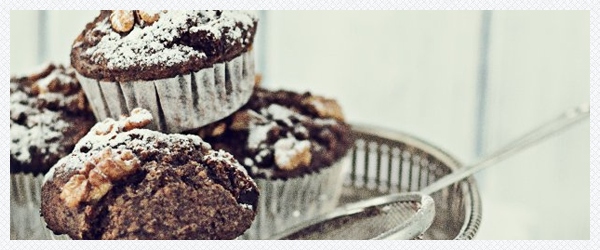

Żytnie babeczki makowe
Składniki
- 375 g masy makowej z bakaliami
- 1/4 - 1/2 szklanki cukru
- 3 małe jajka
- 1/3 szklanki śmietanki kremowej 36%
- 2 łyżeczki ekstraktu migdałowego lub 2 łyżki likieru migdałowego Amaretto
- 70 g ciemnej czekolady, posiekanej na kawałki
- 1/2 szklanki posiekanego ananasa (świeżego lub z puszki, odsączonego)
- 1,5 szklanki mąki żytniej np. typ 1400 (lub orkiszowej razowej)
- 2 łyżeczki sody oczyszczonej
- 1 szklanka zsiadłego mleka (lub jogurtu naturalnego)
- orzechy włoskie do dekoracji, cukier puder do posypania
Potrzebnych będzie: 12 papilotek o średnicy 4 cm

Piekarnik nagrzać do 175 stopni. Do misy miksera włożyć masę makową z bakaliami i zmiksować na wolnych obrotach z cukrem. Następnie kolejno dodawać jajka, miksując po każdym dodanym przez około 30 sekund, na wolnych obrotach miksera. Dodać śmietankę, ekstrakt lub likier migdałowy i zmiksować. Na koniec wymieszać z posiekaną czekoladą oraz ananasem.
Mąkę wymieszać z sodą i dodać do masy makowej, wymieszać delikatnie łyżką, następnie połączyć wolno mieszając z zsiadłym mlekiem. Masę wyłożyć do 12 papilotek znajdujących się we wgłębieniach formy na muffiny.
Udekorować dwiema połówkami orzecha włoskiego. Wstawić do nagrzanego piekarnika i piec przez 25 - 30 minut, aż patyczek będzie suchy. Wyjąć na kratkę, ostudzić i posypać cukrem pudrem.